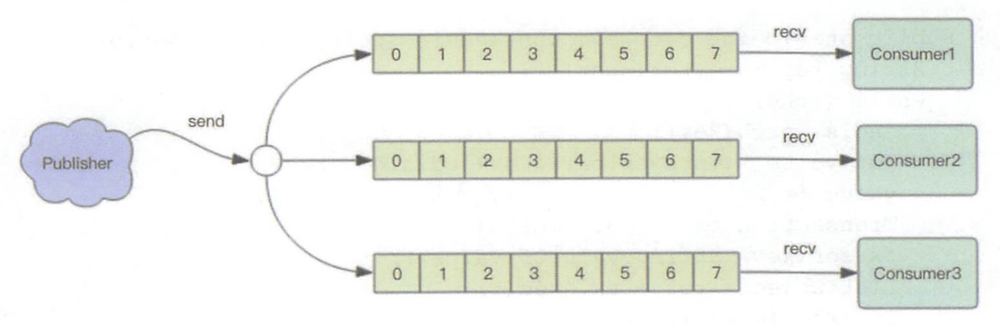
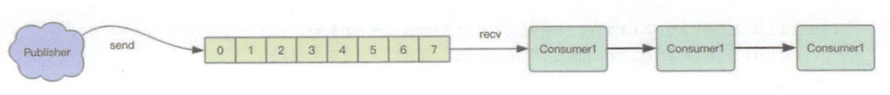

消息多播
消息多播允许生产者生产一次消息，中间件负责将消息复制到多个消息队列，每个消息队列由相应的消费组进行消费。它是分布式系统常用的一种解耦方式，用于将多个消费组的逻辑进行拆分。支持了消息多播，多个消费组的逻辑就可以放到不同的子系统中。
如果是普通的消息队列，就得将多个不同的消费组逻辑串接起来放在一个子系统中，进行连续消费。

如果是普通的消息队列，就得将多个不同的消费组逻辑串接起来放在一个子系统中，进行连续消费。

PubSub
为了支持消息多播，Redis 不能再依赖于那 5 种基本数据类型了。它单独使用了一个模块来支持消息多播，这个模块的名字叫着 PubSub，也就是 Publisher Subscriber，发布者订阅者模型。
import time
import redis
client = redis.StrictRedis()
p = client.pubsub()
p.subscribe("codehole")
time.sleep(1)
print p.get_message()
client.publish("codehole", "java comes")
time.sleep(1)
print p.get_message()
client.publish("codehole", "python comes")
time.sleep(1)
print p.get_message()
print p.get_message()
{'pattern': None, 'type': 'subscribe', 'channel': 'codehole', 'data': 1L}
{'pattern': None, 'type': 'message', 'channel': 'codehole', 'data': 'java comes'}
{'pattern': None, 'type': 'message', 'channel': 'codehole', 'data': 'python comes'}
None
客户端发起订阅命令后，Redis 会立即给予一个反馈消息通知订阅成功。因为有网络传输延迟，在 subscribe 命令发出后，需要休眠一会，再通过 get_message 才能拿到反馈消息。客户端接下来执行发布命令，发布了一条消息。同样因为网络延迟，在 publish 命令发出后，需要休眠一会，再通过 get_message 才能拿到发布的消息。如果当前没有消息，get_message 会返回空，告知当前没有消息，所以它不是阻塞的。
Redis PubSub 的生产者和消费者是不同的连接，也就是上面这个例子实际上使用了两个 Redis 的连接。
在生产环境中，我们很少将生产者和消费者放在同一个线程里。如果它们真要在同一个线程里，何必通过中间件来流转，直接使用函数调用就行。所以我们应该将生产者和消费者分离，接下来我们看看分离后的代码要怎么写。
消费者
import time
import redis
client = redis.StrictRedis()
p = client.pubsub()
p.subscribe("codehole")
while True:
msg = p.get_message()
if not msg:
time.sleep(1)
continue
print msg
生产者
import redis
client = redis.StrictRedis()
client.publish("codehole", "python comes")
client.publish("codehole", "java comes")
client.publish("codehole", "golang comes")
必须先启动消费者，然后再执行生产者，消费者我们可以启动多个，pubsub 会保证它们收到的是相同的消息序列。
我们从消费者的控制台窗口可以看到上面的输出，每个消费者窗口都是同样的输出。第一行是订阅成功消息，它很快就会输出，后面的三行会在生产者进程执行的时候立即输出。
上面的消费者是通过轮询 get_message 来收取消息的，如果收取不到就休眠 1s。这让我们想起了第 3 节的消息队列模型，我们使用 blpop 来代替休眠来提高消息处理的及时性。
PubSub 的消费者如果使用休眠的方式来轮询消息，也会遭遇消息处理不及时的问题。不过我们可以使用 listen 来阻塞监听消息来进行处理，这点同 blpop 原理是一样的。下面我们改造一下消费者
阻塞消费者
import time
import redis
client = redis.StrictRedis()
p = client.pubsub()
p.subscribe("codehole")
for msg in p.listen():
print msg
代码简短了很多，不需要再休眠了，消息处理也及时了。
模式订阅
上面提到的订阅模式是基于名称订阅的，消费者订阅一个主题是必须明确指定主题的名称。如果我们想要订阅多个主题，那就 subscribe 多个名称。
> subscribe codehole.image codehole.text codehole.blog # 同时订阅三个主题，会有三条订阅成功反馈信息
1) "subscribe"
2) "codehole.image"
3) (integer) 1
1) "subscribe"
2) "codehole.text"
3) (integer) 2
1) "subscribe"
2) "codehole.blog"
3) (integer) 3
这样生产者向这三个主题发布的消息，这个消费者都可以接收到。
> publish codehole.image https://www.google.com/dudo.png
(integer) 1
> publish codehole.text " 你好，欢迎加入码洞 "
(integer) 1
> publish codehole.blog '{"content": "hello, everyone", "title": "welcome"}'
(integer) 1
如果现在要增加一个主题codehole.group，客户端必须也跟着增加一个订阅指令才可以收到新开主题的消息推送。
为了简化订阅的繁琐，redis 提供了模式订阅功能Pattern Subscribe，这样就可以一次订阅多个主题，即使生产者新增加了同模式的主题，消费者也可以立即收到消息
> psubscribe codehole.* # 用模式匹配一次订阅多个主题，主题以 codehole. 字符开头的消息都可以收到
1) "psubscribe"
2) "codehole.*"
3) (integer) 1
消息结构
前面的消费者消息输出时都是下面的这样一个字典形式
{'pattern': None, 'type': 'subscribe', 'channel': 'codehole', 'data': 1L}
{'pattern': None, 'type': 'message', 'channel': 'codehole', 'data': 'python comes'}
{'pattern': None, 'type': 'message', 'channel': 'codehole', 'data': 'java comes'}
{'pattern': None, 'type': 'message', 'channel': 'codehole', 'data': 'golang comes'}
那这几个字段是什么含义呢？
data
消息的内容，一个字符串。
channel
它表示当前订阅的主题名称。
type
它表示消息的类型，如果是一个普通的消息，那么类型就是 message，如果是控制消息，比如订阅指令的反馈，它的类型就是 subscribe，如果是模式订阅的反馈，它的类型就是 psubscribe，还有取消订阅指令的反馈 unsubscribe 和 punsubscribe。
pattern
它表示当前消息是使用哪种模式订阅到的，如果是通过 subscribe 指令订阅的，那么这个字段就是空。
PubSub 缺点
PubSub 的生产者传递过来一个消息，Redis 会直接找到相应的消费者传递过去。如果一个消费者都没有，那么消息直接丢弃。如果开始有三个消费者，一个消费者突然挂掉了，生产者会继续发送消息，另外两个消费者可以持续收到消息。但是挂掉的消费者重新连上的时候，这断连期间生产者发送的消息，对于这个消费者来说就是彻底丢失了。
如果 Redis 停机重启，PubSub 的消息是不会持久化的，毕竟 Redis 宕机就相当于一个消费者都没有，所有的消息直接被丢弃。
正是因为 PubSub 有这些缺点，它几乎找不到合适的应用场景。所以 Redis 的作者单独开启了一个项目 Disque 专门用来做多播消息队列。该项目目前没有成熟，一直长期处于 Beta 版本，但是相应的客户端 sdk 已经非常丰富了，就待 Redis 作者临门一脚发布一个 Release 版本。
补充
2018年6月， Redis5.0 新增了 Stream 数据结构，这个功能给 Redis 带来了持久化消息队列，从此 PubSub 可以消失了，Disqueue 估计也永远发不出它的 Release 版本了。具体见 Stream 。
本文由 Sajor
创作，采用 知识共享署名4.0 国际许可协议进行许可
本站文章除注明转载/出处外，均为本站原创或翻译，转载前请务必署名
最后编辑时间为: 2022-03-16T18:29:42+08:00